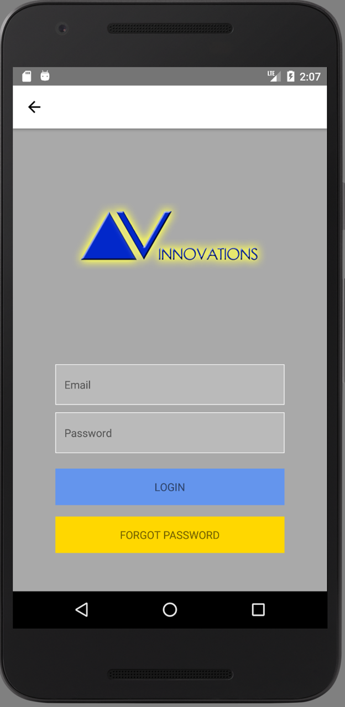
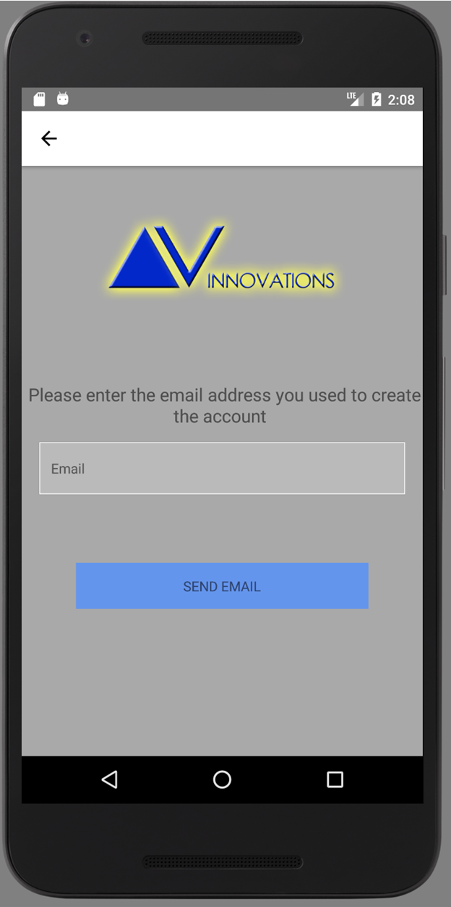
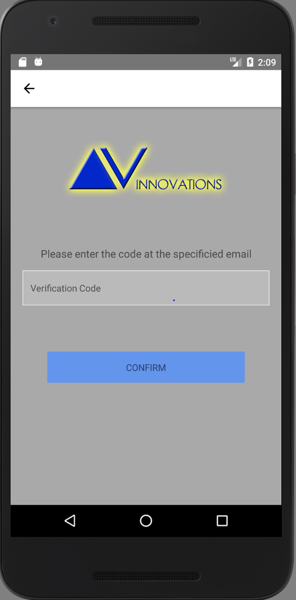
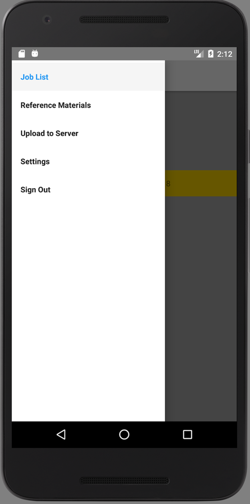
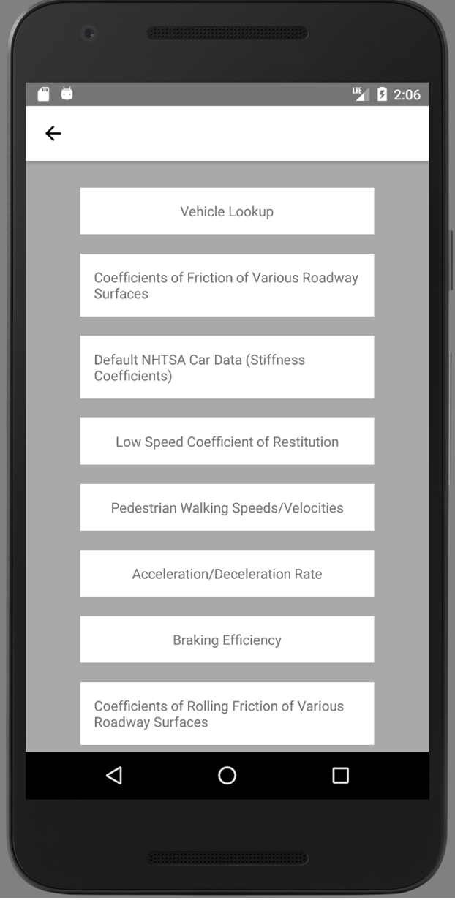
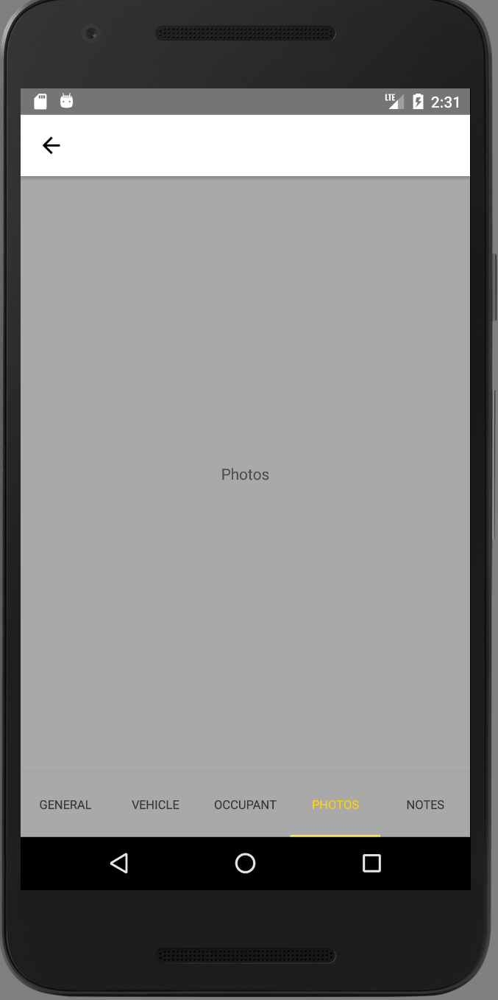

Start up: This is the default page when the app starts up. The user can choose to log in if are an authorized user and have cellular service. If not they can still choose to go to the reference pages online or offline.

Log in: This is the log in screen. The user can enter their username and password into the spots provided. They can only log in if they have set up their account through the desktop application. There is also the function for the user to reset their password through a seperate screen.
Log in: This is the log in screen. The user can enter their username and password into the spots provided. They can only log in if they have set up their account through the desktop application. There is also the function for the user to reset their password through a seperate screen.

Password reset: This page prompts the user with a field to enter an email. When the send email button is pressed it will validate with the backend that the email exists and send the user an email containing a confirmation code for resetting the password.
Password reset: This page prompts the user with a field to enter an email. When the send email button is pressed it will validate with the backend that the email exists and send the user an email containing a confirmation code for resetting the password.

Reset Code Validation: After the user has received the email they will be able to enter the given code from the email on this page. Afterwards the user will forwarded on to enter a new password and the database will be updated.
Reset Code Validation: After the user has received the email they will be able to enter the given code from the email on this page. Afterwards the user will forwarded on to enter a new password and the database will be updated.

Select a job: This is the main hub page of the app. The user can choose to select an old job to edit or view from a list of jobs with the date that they were created, or the user can choose to create a brand new job.

Side navigation: This window will be prompted when the user swipes to the right on the main page of the app or when they press the soon to be implemented hamburger menu. It will have options for easier navigation including: job list, reference material, an option to upload data to server, settings, and a sign out option.
Side navigation: This window will be prompted when the user swipes to the right on the main page of the app or when they press the soon to be implemented hamburger menu. It will have options for easier navigation including: job list, reference material, an option to upload data to server, settings, and a sign out option.

Settings: This screen will have general settings such as the time increment for auto uploading or auto signing out the user from inactivity. They will also be able to clear the data stored on their phone with a single button press here. We also have a stretch goal to create light and dark themes. If that is implemented that will also be stored here.

Reference material: This screen will allow the users to look through common needed materials that are organized into a nice format. They can look at the reference materials page even if they have not logged in. The type of things that they'll be able to look at are: Coefficient of friction of various roadways, default car data, low speed coefficient of restitution, pedestrian walking speed/velocities, and a vehicle database with a look up option.
Reference material: This screen will allow the users to look through common needed materials that are organized into a nice format. They can look at the reference materials page even if they have not logged in. The type of things that they'll be able to look at are: Coefficient of friction of various roadways, default car data, low speed coefficient of restitution, pedestrian walking speed/velocities, and a vehicle database with a look up option.

Vehicle Search Page: This screen will allow the users to search for information from a large database of cars with the simple year, make, and model of the car.

General Information: This is where users can input basic information for the job that they are reporting. It has features such as: the job name, location with the possibility of using google maps to get the location, and what the weather was like on the day.

Vehicle Information: This page includes the option to pick the number of vehicles involved in the crash. With the number chosen it will bring up multiple different prompts to fill in for each vechile. For each vehicle they can fill out the: vehicle year, make, model, and color, license plate and the inforamtion involved with it, the vin number, and other various vehicle specs about the cars involved.

Occupation Information: This page includes the option to pick the number of people involved with in the crash. Depending on the number of people chosen it will have a variable number of sections containing entry fields for each person involved. The fields in these sections include the occupant's: name, address, phone, birth date, vehicle they were in as well as their position in the vehicle, their impairment, and any other occupant specific notes necessary.

Photos: On this page the user will be able to upload and take pictures of the job that they are working. These as with all the data will be uploaded to the database. Currently this screen is still under UI construction.
Photos: On this page the user will be able to upload and take pictures of the job that they are working. These as with all the data will be uploaded to the database. Currently this screen is still under UI construction.

Personal Notes: This page will allow the users to record personal or other extraneous notes pertaining to the job they are working.